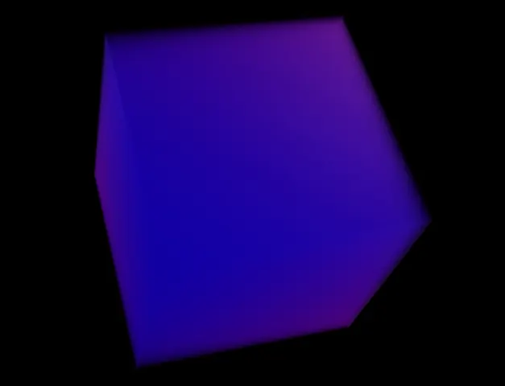
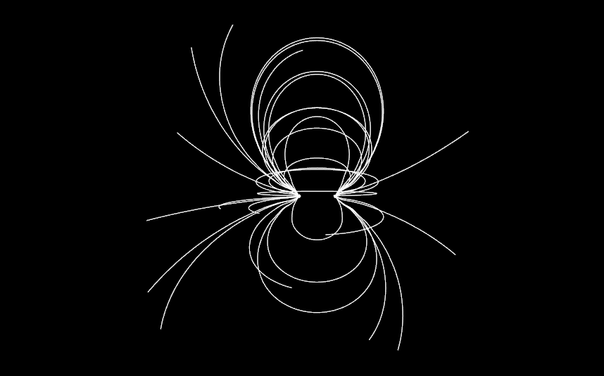
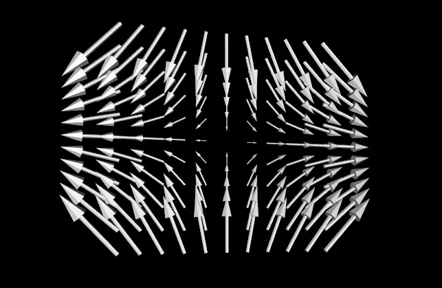
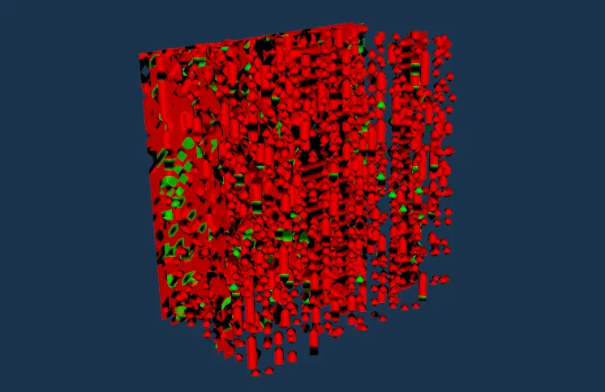

Modern datasets don’t just have “more rows”, they have more dimensions: space, time, uncertainty, multiple physical variables, and often multiple scales of detail. In that world, visualization isn’t decoration; it’s how you think. VTK matters here because it doesn’t force you into one visualization style. It gives you a toolkit of techniques that all plug into the same pipeline model, so you can iterate quickly: try a contour, swap to volume rendering, add glyphs, seed streamlines, and keep the rest of your workflow intact.
In modern data analysis, visual exploration often becomes the fastest , and sometimes the only , way to grasp relationships hidden in large, multi-dimensional datasets. VTK meets this challenge by bundling dozens of state-of-the-art algorithms behind a consistent, object-oriented API that can be combined like building blocks. Whether you need to probe scalar fields, interrogate complex vector-tensor interactions, or render time-varying simulations, the same pipeline abstractions apply, letting you mix and match mappers, filters, and interaction styles with minimal boilerplate.
VTK offers a powerful array of advanced visualization techniques. These are essential for the effective representation and understanding of complex data types. VTK supports visualization of scalar, vector, and tensor fields, among others. The process typically involves mapping data elements to graphical primitives like points, lines, or polygons. These primitives are then rendered to produce a visual representation, enhancing understanding and analysis.
A good “reader promise” for this section is: each technique is a different answer to the question “what do I want to see?” Some techniques show surfaces, some show interiors, some show motion, and some show local direction + magnitude. Once you recognize which question you’re asking, picking the right technique becomes much less mysterious.
Do match the technique to the question (interior vs boundary vs flow vs local orientation). Don’t try to make one technique do everything, hybrid views (e.g., volume + isosurfaces + glyphs) are often the most informative.
Volume rendering exists for the moments when “the surface” is not the story. If the interesting information lives inside the data, density gradients, soft tissue layers, temperature fields, shock structures, then extracting a single boundary can hide what matters. Volume rendering instead treats your dataset like a semi-transparent material and lets your eye integrate information through depth.
While surface-based methods depict only the exterior of a dataset, volume rendering reveals the full interior by sampling, classifying, and compositing every voxel along a viewing ray. This “direct” approach circumvents the need for explicit geometry extraction and excels when fine-grained density variations , such as soft tissue boundaries, shock fronts, or turbulence eddies , carry important meaning.
Volume rendering is a sophisticated technique used for visualizing 3D scalar fields. This method allows for the representation of volumetric data, such as that obtained from CT scans, MRI scans, or simulations, by assigning different colors and opacities to different scalar values within the volume. By varying these visual properties, the technique can highlight specific features within the data, making it possible to see and understand complex structures that are otherwise hidden in the raw data.
The “make it look good” secret here is the transfer functions: color and opacity are basically your storytelling knobs. That’s why volume rendering can feel magical when it’s tuned, and muddy when it’s not.
Do spend time on color/opacity transfer functions; they determine what becomes visible. Don’t expect default settings to reveal your feature of interest, volume rendering needs intent.
One of the primary applications of volume rendering is in the field of medical imaging. Here, it is used to visualize internal body structures, such as organs, tissues, and bones, in three dimensions. This can be critical for diagnostic purposes, treatment planning, and educational demonstrations. For example, MRI scans can be volume-rendered to show detailed views of the brain, allowing for the identification of abnormalities.
Another significant application is in scientific visualization, where volume rendering helps researchers understand and analyze complex datasets from simulations, such as fluid dynamics, meteorological data, and more.
vtkVolume class represents the volume to be rendered.vtkVolumeMapper class defines how the volume data is mapped to visual properties like color and opacity. Various mappers can be used depending on the specific requirements, such as vtkFixedPointVolumeRayCastMapper or vtkGPUVolumeRayCastMapper.vtkVolumeProperty class.A quick intuition:
vtkVolumeMapper = “how do we sample and composite the volume?”vtkVolumeProperty = “what should those samples look like?”vtkVolume = “the thing we place in the scene”Do think “mapper = method, property = style.” Don’t mix them up, many bugs are just misconfigured properties attached to the wrong volume.
import vtk
# Create a volume
volume = vtk.vtkVolume()
# Create a volume property
volume_property = vtk.vtkVolumeProperty()
volume_property.SetColor(color_transfer_function)
volume_property.SetScalarOpacity(opacity_transfer_function)
volume_property.ShadeOn()
volume_property.SetInterpolationTypeToLinear()
# Set the volume property
volume.SetProperty(volume_property)
# Create a volume mapper
volume_mapper = vtk.vtkFixedPointVolumeRayCastMapper()
volume_mapper.SetInputData(volume_data)
# Connect the volume and the mapper
volume.SetMapper(volume_mapper)
# Create a renderer, render window, and interactor
renderer = vtk.vtkRenderer()
render_window = vtk.vtkRenderWindow()
render_window_interactor = vtk.vtkRenderWindowInteractor()
# Add the volume to the renderer
renderer.AddVolume(volume)
# Add the renderer to the render window
render_window.AddRenderer(renderer)
# Set the interactor for the render window
render_window.SetInteractor(render_window_interactor)
# Initialize and start the rendering loop
render_window.Render()
render_window_interactor.Start()vtkVolume object is created to represent the volume.vtkVolumeProperty object is set up to define the appearance of the volume, including color and opacity transfer functions.vtkVolumeMapper is used to map the volumetric data to the rendering pipeline.vtkRenderer, vtkRenderWindow, and vtkRenderWindowInteractor.This simple example illustrates the basic setup needed for volume rendering using VTK. More complex visualizations can involve additional customization and processing to handle specific datasets and rendering requirements.

Flow fields are where visualization becomes detective work. You’re not just asking “what is the value here?”, you’re asking “where does this go?”, “what influences what?”, and “what patterns repeat?” Streamlines and pathlines turn a vector field into something your brain can follow.
Flow visualization often requires answering both what-if and how-did-it-get-here questions. Streamlines provide an instantaneous “map” of flow direction for steady fields, while pathlines let you replay the history of moving parcels in unsteady simulations. By seeding the domain strategically , for example, around stagnation points or through boundary layers , engineers can diagnose recirculation zones, vortex shedding, and transport pathways at a glance.
Streamlines and pathlines are essential techniques for visualizing fluid flow or other vector fields. These methods help in understanding the behavior and dynamics of the flow by providing a visual representation of the movement of particles within the field.
The big idea to hold onto: seeding is everything. The same vector field can look “boring” or “revealing” depending on where you place seeds and how you integrate. That’s why flow visualization is part science, part art.
Do choose seed locations intentionally (inlets, boundaries, near obstacles, high-gradient regions). Don’t interpret “no streamlines” as “no flow”, you might just have bad seeds or integration settings.
Streamlines represent the flow within steady vector fields. They trace the paths that particles would follow if they were placed in the flow, providing a snapshot of the flow's structure at a particular instant. These lines are tangent to the velocity field at every point, giving a clear depiction of the direction and speed of the flow.
Pathlines, on the other hand, are used for time-varying vector fields. They show the trajectories of particles over time, capturing the history of their movement through the field. This is particularly useful for visualizing the dynamics of unsteady flows, where the velocity field changes over time.
vtkStreamTracer class generates streamlines or pathlines from a given vector field.vtkRibbonFilter class is used. This enhances the visualization by giving the lines thickness and orientation, which can indicate additional information such as vorticity or the direction of rotation.A helpful “do/don’t” distinction:
Do add ribbons or tubes when you want depth and orientation cues. Don’t over-thicken them, visual clutter can hide the flow you’re trying to reveal.
import vtk
# Create a streamline tracer
stream_tracer = vtk.vtkStreamTracer()
# Set the input data for the stream tracer (example: using a vector field data source)
stream_tracer.SetInputData(vector_field_data)
# Configure the stream tracer
stream_tracer.SetIntegratorTypeToRungeKutta4()
stream_tracer.SetMaximumPropagation(100) # Maximum length of streamlines
stream_tracer.SetInitialIntegrationStep(0.1) # Initial step size for integration
# Specify the seed points where streamlines start
seed_points = vtk.vtkPointSource()
seed_points.SetRadius(1.0)
seed_points.SetCenter(0.0, 0.0, 0.0)
seed_points.SetNumberOfPoints(100)
stream_tracer.SetSourceConnection(seed_points.GetOutputPort())
# Create a poly data mapper
mapper = vtk.vtkPolyDataMapper()
mapper.SetInputConnection(stream_tracer.GetOutputPort())
# Create an actor to represent the streamlines
actor = vtk.vtkActor()
actor.SetMapper(mapper)
# Create a renderer, render window, and interactor
renderer = vtk.vtkRenderer()
render_window = vtk.vtkRenderWindow()
render_window_interactor = vtk.vtkRenderWindowInteractor()
# Add the actor to the renderer
renderer.AddActor(actor)
# Add the renderer to the render window
render_window.AddRenderer(renderer)
# Set the interactor for the render window
render_window.SetInteractor(render_window_interactor)
# Initialize and start the rendering loop
render_window.Render()
render_window_interactor.Start()vtkStreamTracer object is created to generate the streamlines from a given vector field.vtkPolyDataMapper and vtkActor are used to map the streamlines to graphical primitives and render them.vtkRenderer, vtkRenderWindow, and vtkRenderWindowInteractor are set up to display the streamlines.
Glyphs are the “dense information overlay” technique. When a dataset has thousands of sample points, drawing full geometry for each point is impossible, but drawing a tiny arrow or ellipsoid at each point can immediately reveal patterns: alignment, divergence, magnitude gradients, anisotropy.
Whenever you need localized cues about magnitude and direction at thousands of sample points, glyphs step in as compact visual metaphors. By scaling, coloring, and orienting tiny shapes, you can overlay complex scalar, vector, or tensor information onto the same geometric frame, turning abstract numbers into instantly readable patterns, be it wind-barb arrows on meteorological maps or diffusion tensors in brain tractography.
Glyphs are small geometric objects (such as arrows, cones, or spheres) used in VTK to represent and visualize complex data at discrete points in space. These graphical representations can be used to depict scalar, vector, or tensor data, providing a way to intuitively understand the magnitude, direction, and other characteristics of the underlying data.
The main risk with glyphs is also the main reason they’re powerful: it’s easy to overplot and turn your screen into a porcupine. The trick is sampling and scaling.
Do downsample points, cap glyph sizes, and use transparency if needed. Don’t plot every single vector in a huge dataset, readability beats completeness.
Regular glyphs are typically used for visualizing scalar data. They can represent quantities like temperature, pressure, or density at specific points in a dataset. By scaling the glyphs according to the scalar values, one can easily compare the relative magnitudes across different points.
Oriented glyphs, on the other hand, are aligned according to vector or tensor data, making them ideal for visualizing directionality in the field. These glyphs can depict flow direction, magnetic field lines, or any other vector field, providing a clear visual indication of both the magnitude and direction at each point.
vtkGlyph3D class generates glyphs based on input data. This class can produce both regular and oriented glyphs depending on the provided scalar or vector data.vtkHedgeHog class is specifically designed, making it useful for visualizing vector fields.A good rule of thumb:
vtkGlyph3D = flexible “general glyph engine”vtkHedgeHog = fast, direct “spikes for vectors”Do start with HedgeHog when you want quick vector direction checks. Don’t jump straight to complex glyphs when you’re still validating the data.
import vtk
# Create a source of glyphs, for example, arrows
arrow_source = vtk.vtkArrowSource()
# Create a glyph generator
glyph_generator = vtk.vtkGlyph3D()
glyph_generator.SetSourceConnection(arrow_source.GetOutputPort())
# Set the input data for the glyph generator (example: using a point data source)
points = vtk.vtkPointSource()
points.SetNumberOfPoints(50)
points.SetRadius(5.0)
points.Update()
glyph_generator.SetInputConnection(points.GetOutputPort())
# Configure the glyph generator
glyph_generator.SetScaleFactor(0.2)
glyph_generator.OrientOn()
glyph_generator.SetVectorModeToUseVector()
glyph_generator.SetScaleModeToScaleByVector()
# Create a poly data mapper
mapper = vtk.vtkPolyDataMapper()
mapper.SetInputConnection(glyph_generator.GetOutputPort())
# Create an actor to represent the glyphs
actor = vtk.vtkActor()
actor.SetMapper(mapper)
# Create a renderer, render window, and interactor
renderer = vtk.vtkRenderer()
render_window = vtk.vtkRenderWindow()
render_window_interactor = vtk.vtkRenderWindowInteractor()
# Add the actor to the renderer
renderer.AddActor(actor)
# Add the renderer to the render window
render_window.AddRenderer(renderer)
# Set the interactor for the render window
render_window.SetInteractor(render_window_interactor)
# Initialize and start the rendering loop
render_window.Render()
render_window_interactor.Start()vtkArrowSource is used to create the shape of the glyphs (arrows in this case).vtkGlyph3D object is set up to generate the glyphs from a point data source.vtkPolyDataMapper and vtkActor are used to map the glyphs to graphical primitives and render them.vtkRenderer, vtkRenderWindow, and vtkRenderWindowInteractor are set up to display the glyphs.
Contouring is the “make the invisible boundary visible” technique. When you have a scalar field (temperature, density, pressure, intensity), an isosurface answers the question: where is this value exactly reached? That turns an abstract field into a concrete surface you can measure, simplify, export, or compare across time steps.
When analysts care about where a particular threshold is reached, say, the Mach 1 shock surface in a CFD run or the 50 % porosity boundary in a rock core, contouring extracts that implicit boundary as an explicit mesh. Marching algorithms turn scattered voxel samples into watertight polygonal “skins,” ready for further measurement, mesh reduction, or export to CAD/3-D printing pipelines.
Contouring is a technique for extracting surface representations from a scalar field. This method is used to identify and visualize surfaces within a 3D volume where the scalar field is equal to a specific value, known as the iso-value. The surfaces created through this process are called isosurfaces, which provide a clear visualization of areas within the scalar field that have the same value.
The practical reason people love isosurfaces: once you have a mesh, you can do mesh things, compute area/volume, run smoothing/decimation, find curvature, export to STL, and so on.
Do treat the iso-value as a scientific/analytic parameter, not just a slider to make it look cool. Don’t assume a single iso-value tells the whole story, often you want multiple surfaces or a sweep across thresholds.
vtkContourFilter class generates contour lines or surfaces from the scalar field.vtkMarchingCubes class computes isosurfaces efficiently and produces high-quality surfaces.A quick mental map:
vtkContourFilter = general contouring toolvtkMarchingCubes = classic, specialized workhorse for image/volume dataDo use MarchingCubes when you’re specifically working with volumetric image-like data and want that classic behavior. Don’t skip post-processing, contours often benefit from smoothing, decimation, and normal generation depending on your use case.
import vtk
# Read the volume data
reader = vtk.vtkXMLImageDataReader()
reader.SetFileName("path/to/your/volume/data.vti")
reader.Update()
# Create a contour filter
contour_filter = vtk.vtkContourFilter()
contour_filter.SetInputConnection(reader.GetOutputPort())
contour_filter.SetValue(0, iso_value) # Set the iso-value
# Create a poly data mapper
mapper = vtk.vtkPolyDataMapper()
mapper.SetInputConnection(contour_filter.GetOutputPort())
# Create an actor to represent the contour
actor = vtk.vtkActor()
actor.SetMapper(mapper)
# Create a renderer, render window, and interactor
renderer = vtk.vtkRenderer()
render_window = vtk.vtkRenderWindow()
render_window_interactor = vtk.vtkRenderWindowInteractor()
# Add the actor to the renderer
renderer.AddActor(actor)
# Add the renderer to the render window
render_window.AddRenderer(renderer)
# Set the interactor for the render window
render_window.SetInteractor(render_window_interactor)
# Initialize and start the rendering loop
render_window.Render()
render_window_interactor.Start()vtkXMLImageDataReader is used to read the volume data from a file.vtkContourFilter object is created to generate the contour based on the specified iso-value.vtkPolyDataMapper and vtkActor are used to map the contour to graphical primitives and render it.vtkRenderer, vtkRenderWindow, and vtkRenderWindowInteractor are set up to display the contour.